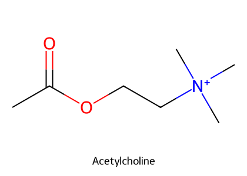
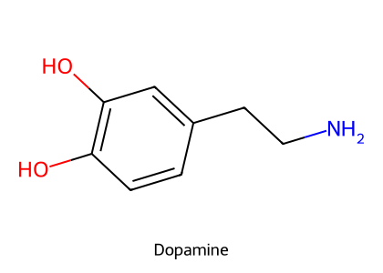
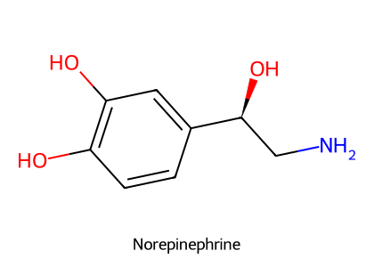
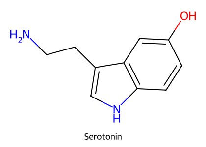
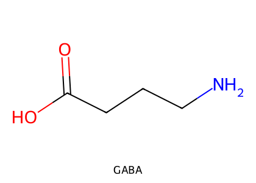
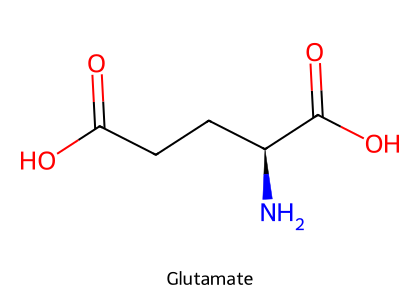

重點摘要
A1 是整個中樞神經藥理的「地圖」：先認識腦的哪個區域負責什麼、藥物要怎麼穿過血腦屏障，再看神經元之間怎麼用化學物質溝通（突觸傳遞），最後落到每一種神經傳導物質有哪些受體、藥物從哪一個環節介入。讀後面的鎮靜劑、麻醉藥、鴉片類、抗癲癇藥時，只要回頭問一句「它作用在哪個受體、是興奮還是抑制」，就能把藥效與副作用串起來。第2節的「受體與藥物對照總表」就是這張地圖的索引。
- 血腦屏障的形態基礎是腦微血管內皮細胞的緊密連接，胞飲小泡與窗孔很少；分子量、電荷、脂溶性、載體決定藥物能否進入，脂溶性越高越容易穿過。發炎、感染、外傷、缺血、高血壓、新生動物都會讓血腦屏障變鬆。
- 神經傳導物質的釋放依賴 Ca²⁺：動作電位到達神經末梢 → 電壓依賴性 Ca²⁺ 通道打開 → 胞吐釋放 → 與受體結合。
- α2 受體是 NE 神經元的自體受體：活化後負回饋降低 NE 釋放。這正是 α2 致效劑在獸醫當鎮靜劑、在人醫當降血壓藥的原因。
- 胺基酸類：glutamate、aspartate 是主要的興奮性傳導物質；GABA、glycine 是抑制性。GABA-A 是配體閘門 Cl⁻ 通道（Cl⁻ 內流 → 過極化 → IPSP），GABA-B 是 G 蛋白偶聯受體；glycine 負責脊髓的突觸後抑制。
- 受體兩大類：離子通道型（菸鹼型 ACh、GABA-A、離子型 glutamate、glycine、5-HT3）與 G 蛋白偶聯型（蕈毒鹼型 ACh、代謝型 glutamate、鴉片類受體與其他胺類、胜肽類受體）。
- 中樞抑制是一條劑量連續譜：解除焦慮 → 去抑制 → 鎮靜 → 催眠 → 全身麻醉 → 昏迷 → 死亡；以 barbiturate 為例，相對劑量約為 1/3（鎮靜）、1（催眠）、5（麻醉）、10（死亡）。
受體與藥物對照總表重要
把講義的受體分類，對應到本站其他頁面的代表藥物。點最後一欄可以跳到該頁。受體與作用方向來自講義與教科書，代表藥物的詳細內容見各頁。
| 受體 | 類型 | 作用 | 代表藥物與作用方式 | 相關頁面 |
|---|---|---|---|---|
| GABA-A | 配體閘門 Cl⁻ 通道 | 抑制 | Barbiturates、propofol、etomidate 作用於 GABA 受體（教科書）；benzodiazepines 促進 GABA 介導的 Cl⁻ 傳導（教科書） | 注射式麻醉藥、鎮靜、抗癲癇 |
| NMDA（離子型 glutamate） | 配體閘門陽離子通道（Ca²⁺ 通透性高） | 興奮 | Ketamine 是 NMDA 受體拮抗劑，負責大部分麻醉與止痛作用（教科書） | 注射式麻醉藥 |
| α2 腎上腺素性 | GPCR（突觸前自體受體） | 抑制 NE 釋放 | α2 致效劑：獸醫當鎮靜劑（xylazine、dexmedetomidine 等）；拮抗劑 atipamezole、yohimbine 可反轉 | 鎮靜與術前用藥、腎上腺素性藥物 |
| D2 多巴胺 | GPCR | — | 部分抗精神病藥是 D2 拮抗劑（講義）；phenothiazine（acepromazine）；metoclopramide 也是 D2 拮抗劑（教科書） | 鎮靜、腸胃道用藥 |
| 鴉片類受體 | GPCR | 突觸前、後抑制 | 鴉片類止痛藥；拮抗劑 naloxone | 鴉片類止痛藥 |
| 蕈毒鹼型 M1–M5 | GPCR | — | 拮抗劑 atropine | 抗膽鹼、膽鹼性 |
| 菸鹼型 NN／NM | 配體閘門離子通道 | 興奮 | NN：自主神經節與中樞；NM：骨骼肌（神經肌肉阻斷劑作用處） | 神經肌肉阻斷劑 |
| 5-HT3 | 配體閘門離子通道 | — | 5-HT 受體中唯一的離子通道型（講義）；止吐藥的標的 | 血清素受體藥物 |
| 神經傳導物質轉運體 | 再回收蛋白 | 終止訊號 | TCA 阻斷 NE 再回收；SSRI 阻斷 5-HT 再回收；cocaine、amphetamine 阻斷 DA 再回收（講義） | 本頁第9節 |
中樞神經藥物分類 Categories of CNS Drugs
藥理學家研究中樞神經藥物有兩個目的：把藥物當研究工具，了解正常中樞如何運作；以及開發治療中樞疾病的藥物。
| 類別（講義） | 中文 | 本站頁面 |
|---|---|---|
| Injectable anesthetics | 注射用麻醉劑 | 注射式麻醉藥 |
| Sedatives／hypnotics（minor tranquilizers） | 鎮靜劑／安眠藥 | 鎮靜與術前用藥 |
| Major tranquilizers／neuroleptics（antipsychotics） | 寧神劑／精神安定劑（抗精神病藥物） | 鎮靜與術前用藥（A5） |
| Narcotic analgesics | 麻醉鎮痛藥／類鴉片藥物 | 鴉片類止痛藥 |
| Inhalation anesthetics | 吸入性麻醉劑 | 吸入性麻醉藥 |
| Preanesthetic medication | 麻醉前給藥 | 鎮靜與術前用藥 |
| Local anesthetics | 局部麻醉劑 | 局部麻醉藥 |
| CNS stimulants | 中樞興奮劑 | — |
| Antidepressants | 抗憂鬱劑 | 本頁第9節（教科書補充） |
| Anticonvulsants | 抗痙攣劑 | 抗癲癇藥物 |
腦與脊髓功能 Brain & Spinal Cord
| 區域 | 功能（講義） |
|---|---|
| 大腦皮質 Cerebral cortex | 最高指揮中心：思考、記憶、學習、隨意運動、語言、推理、知覺 |
| 小腦 Cerebellum | 非隨意運動、平衡、姿勢 |
| 腦幹 Brainstem（中腦＋橋腦＋延腦） | 呼吸、心率、血壓；延腦含呼吸中樞等生命中樞；橋腦含感覺與運動路徑 |
| 下視丘 Hypothalamus | 體溫、情緒、飢餓、口渴、晝夜節律 |
| 視丘 Thalamus | 感覺與運動整合 |
| 邊緣系統 Limbic system | 人格、行為、情緒表現；組成：視丘、下視丘、中隔區（中隔核＋依核）、杏仁核、海馬 |
| 海馬 Hippocampus | 學習、記憶 |
| 基底核 Basal ganglia | 運動 |
| 中腦 Midbrain | 視覺、聽覺、運動 |
脊髓位於脊椎內、與腦解剖上連續：內部灰質是短纖維的神經細胞，外圍白質是上下傳遞訊息的神經纖維，可執行脊髓反射（如膝跳反射）。講義也比較了腦重：人 1,300–1,400 g、犬 72 g、貓 30 g。
血腦屏障 Blood–Brain Barrier重要
腦微血管內皮細胞層：緊密連接，胞飲小泡與窗孔很少。影響穿透的因素：分子量、電荷、脂溶性、載體。脂溶性藥物較易通過；部分營養物質可經主動運輸穿過。
功能：保護腦部免於外來或有害物質（如荷爾蒙）、維持腦部恆定環境。會被破壞的情況：高血壓、新生、高滲透壓、微波、輻射、感染、外傷、缺血、發炎。
核對自 Handbook of Veterinary Pharmacology Ch.1：
① 中樞大部分區域內皮緊密連接、膠細胞包圍微血管前端（例外：最後區 area postrema、松果體、下視丘後葉），藥物必須穿過細胞膜，取決於脂溶性。
② 腦脊髓液持續流入靜脈，不斷稀釋藥物濃度。
③ 脈絡叢有有機酸、鹼的主動運輸，把藥物從 CSF 送回血液；P-glycoprotein 是其中之一。Ivermectin、selamectin（moxidectin 較少）靠 P-gp 排出腦部，部分 Collie 的 P-gp 有缺陷，ivermectin 會累積在中樞造成中毒。Penicillin（弱酸）因有機離子轉運系統而在中樞維持低濃度。
神經元、膠細胞與動作電位
神經組織由神經元與膠細胞組成；腦內約1000億個神經元，膠細胞是神經元的10–50倍。傳入神經把衝動送往中樞，傳出神經把衝動送離中樞。
| 膠細胞 | 功能 |
|---|---|
| 星狀膠細胞 Astrocyte | 提供神經元物理與營養支持；清除碎屑、消化死亡神經元、運送養分、固定神經元、調節細胞外空間 |
| 微膠細胞 Microglia | 中樞的巨噬細胞與免疫細胞 |
| 寡突膠細胞 Oligodendroglia | 中樞神經元的髓鞘 |
| 許旺細胞 Schwann cells | 周邊神經元的髓鞘 |
| 衛星細胞 Satellite cells | 周邊神經元的物理支持 |
把訊息帶離細胞本體；通常每個細胞只有1條；沒有核糖體；可有髓鞘；在離細胞本體較遠處分支。
把訊息帶到細胞本體；通常很多條；沒有髓鞘；在細胞本體附近分支。
動作電位與 Na⁺ 通道
超過閾值才會產生動作電位；過極化代表抑制。有髓鞘的神經以跳躍式傳導（saltatory conduction）加快傳導速度。局部麻醉藥就是阻斷電壓門控 Na⁺ 通道（見局部麻醉藥）。
突觸傳遞 Synaptic Transmission重要
神經傳導物質釋放的五個步驟
神經傳導是電化學過程。受體所在的效應細胞包括突觸前、突觸後神經元與周圍細胞。神經胜肽調節物釋放量比神經傳導物質少，用來放大或減弱神經活性。
突觸的完整流程與自體受體
前驅物合成神經傳導物質 → 儲存與釋放 → 作用在突觸後受體 → 以再回收（轉運體）或酵素分解終止。突觸前的自體受體（autoreceptor）會負回饋抑制釋放；α2 是 NE 神經元的自體受體，活化後降低 NE 神經元活性（講義）。
核對自 Handbook of Veterinary Pharmacology（行為用藥章節）：α2 受體活化 → K⁺ 傳導增加 → 神經元過極化；突觸前 α2 活化使 Ca²⁺ 傳導下降 → NE 釋放減少。
突觸前抑制 vs. 突觸後抑制
「突觸上的突觸」（軸突－軸突突觸）：抑制性神經末梢作用在興奮性神經末梢上，減少其釋放。講義：GABA、鴉片類。
直接讓突觸後神經元過極化。講義：glycine、GABA。
突觸型態：軸突－樹突、軸突－胞體、軸突－軸突。
神經傳導物質的判定與終止
- 判定條件：釋放後必須被失活（再回收或酵素）；直接施用在突觸後膜時，要與神經元釋放時有相同效果。
- 終止作用的四種機制：擴散、酵素分解、膠細胞、再回收。
神經傳導物質與受體 Neurotransmitters & Receptors重要






結構式依 PubChem 資料以 RDKit 自繪。從結構可以看出：DA、NE 都有兒茶酚環（兒茶酚胺），5-HT 是吲哚環；GABA 是 glutamate 脫去一個羧基（glutamic acid decarboxylase）的產物。
小分子神經傳導物質總表（講義）
| 傳導物質 | 細胞本體位置 | 主要作用 |
|---|---|---|
| ACh | 各層級都有 | 興奮（也有抑制） |
| NE | 橋腦與腦幹（藍斑核、延腦） | 主要為興奮 |
| DA | 各層級（邊緣系統） | 主要為興奮 |
| 5-HT | 中縫核 | 主要為興奮 |
| GABA | 中間神經元 | 抑制 |
| Glycine | 中間神經元 | 抑制 |
| Glutamate、aspartate | 各層級 | 興奮 |
各傳導物質重點
| 物質 | 講義重點 |
|---|---|
| ACh | 膽鹼性受體分布在腦、副交感神經、自主神經節與神經肌肉接合處；中樞膽鹼神經元位於基底前腦、橋腦、延腦；與人類阿茲海默症（膽鹼神經元功能下降）相關。蕈毒鹼型 M1–M5（自主神經與中樞）；菸鹼型 NN（自主神經與中樞）、NM（主要在骨骼肌）。ACh 被乙醯膽鹼酯酶分解成膽鹼與醋酸，膽鹼再被回收重新合成 |
| NE | 腦中只有數千個神經元製造 NE，細胞本體在腦幹（藍斑核、延腦），軸突廣泛投射；NE 釋放產生警覺、專注、定向反應，也參與飢餓、口渴、情緒等本能行為；投射到脊髓背角可產生止痛。EP 神經元在中樞較少 |
| DA | 中樞最主要的兒茶酚胺；位於基底核（尾核）、依核、杏仁核、額葉皮質（邊緣系統，「愉悅—獎賞」系統）；受體 D1–D5；D2 與人類思覺失調、帕金森氏症及動物的僵直症（catalepsy：失去隨意運動，四肢停在被擺放的位置）有關；部分抗精神病藥是 D2 拮抗劑；L-dopa（DA 前驅物）治療帕金森氏症 |
| 5-HT | 大量存在於中縫核（橋腦、延腦），廣泛投射到皮質、下視丘、海馬、邊緣系統；參與睡眠、認知、感覺、運動、體溫、痛覺、食慾、性行為、荷爾蒙調節。由色胺酸合成，經 SERT 再回收，被 MAO 分解為 5-HIAA |
| Glutamate、aspartate | 腦中濃度高，幾乎所有中樞區域的主要興奮性傳導物質；突觸的 glutamate 被星狀膠細胞吸收轉成 glutamine，glutamine 再回到突觸前末梢合成 glutamate |
| GABA、glycine | 單羧酸胺基酸，負責突觸前與突觸後抑制；GABA 介導腦中大部分局部中間神經元的抑制與脊髓的突觸前抑制；GABA-A：配體閘門 Cl⁻ 通道（Cl⁻ 內流 → 過極化 → IPSP）；GABA-B：GPCR；glycine 介導脊髓突觸後抑制 |
Glutamate 受體
| 離子型 Ionotropic | 代謝型 Metabotropic | |
|---|---|---|
| 受體 | NMDA、AMPA、kainate | G 蛋白偶聯受體 |
| 結構 | 多次單元複合體 | 單一胜肽、7次穿膜 |
| 位置 | 突觸後 | 突觸前與突觸後 |
| 作用 | ↑陽離子傳導（Ca²⁺、Na⁺、K⁺）。AMPA、kainate：Na⁺、K⁺ 通透，Ca²⁺ 通透性有限；NMDA：Ca²⁺ 通透性高（Ca²⁺:Na⁺:K⁺ = 20:1:1） | 突觸前：↓Ca²⁺ 傳導；突觸後：↓K⁺、產生第二訊息 |
受體分類
菸鹼型 ACh 受體、GABA-A、離子型 glutamate 受體、glycine 受體、5-HT3。
蕈毒鹼型 ACh、代謝型 glutamate、鴉片類受體，以及其他所有胺類、胜肽類受體。下游：腺苷酸環化酶–cAMP、磷酸二酯酶、磷脂酶 C、Ca²⁺／K⁺ 通道。
神經活性胜肽（部分）：bradykinin、β-endorphin、calcitonin、cholecystokinin、enkephalin、insulin、gastrin、dynorphin、glucagon、secretin、somatostatin、vasopressin、oxytocin、prolactin、angiotensin II、substance P、neurotensin、neuropeptide Y。
藥物如何影響中樞 Neuropharmacology
藥物作用的專一性
- 專一性作用：透過可辨識的分子機轉（受體、酵素）作用在特定目標細胞。非專一性作用：以多種機轉影響多種細胞——全身麻醉藥相對非專一。
- 腦外的作用也會影響腦（例：注射 epinephrine 引起焦慮、發燒、恐慌）。
- 劑量：低劑量（治療劑量）較專一；大劑量出現非專一副作用。
- 組織專一性：只有特定細胞有藥物的標的（例：L-dopa 選擇性影響 DA、NE 神經元）；不同組織敏感度不同（例：大腦皮質比延腦對乙醇與麻醉藥更敏感——所以麻醉時意識先消失，呼吸中樞較晚受抑制）。
中樞抑制的劑量連續譜
括號內為講義以 barbiturate 為例的相對劑量（具完整連續譜的藥物）。抗焦慮藥作用在前段，鎮靜劑作用在中段。
影響神經傳導物質量的四種方式（講義）
| 介入點 | 例子 |
|---|---|
| 儲存與釋放 | Amphetamine |
| 生合成 | L-dopa |
| 酵素分解 | 膽鹼酯酶抑制劑 |
| 再回收 | NE 再回收：被三環抗憂鬱劑（TCA）阻斷；5-HT 再回收：被 SSRI 阻斷；DA 再回收：被 cocaine、amphetamine 阻斷 |
核對自 Handbook of Veterinary Pharmacology 行為用藥章節：
抗焦慮：benzodiazepines（diazepam、alprazolam 等，促進 GABA 介導的 Cl⁻ 傳導）、buspirone。
抗憂鬱：TCA（amitriptyline、clomipramine、imipramine、doxepin）、SSRI（fluoxetine、paroxetine、sertraline、fluvoxamine）、MAOI（selegiline）；另有 progestins（medroxyprogesterone acetate、megestrol acetate，部分作用類似 BZD 活化 GABA-A）。
Clomipramine：抑制 NE 與 5-HT 再回收，是 TCA 中對 5-HT 回收最有選擇性者；美國 FDA 核准配合行為治療用於犬分離焦慮；也用於犬強迫行為（追尾、舔舐性皮膚炎）、支配型攻擊；貓的噴尿與心因性脫毛。PO 給藥。
臨床整合：共病與用藥重要
| 情境 | 考量與依據 |
|---|---|
| 癲癇控制中的病患 | 避免降低癲癇閾值的藥：phenothiazine（acepromazine）、metoclopramide、部分抗寄生蟲藥（pyrantel、levamisole、pyrethroids 等）。依據：Handbook Ch.4。詳見總論的案例與抗癲癇藥物頁 |
| Collie 等牧羊犬種 | P-glycoprotein 缺陷 → ivermectin 在一般劑量下就可能累積在中樞造成中毒（Handbook Ch.1） |
| 正在使用 SSRI（如 fluoxetine） | 不可併用 MAOI 或 TCA：突觸 5-HT 過高可能引起致命的血清素症候群（躁動、不安、意識混亂、癲癇、腸胃症狀、嚴重高血壓）；MAOI 與 TCA 併用可能造成危及生命的高血壓危象；教科書建議換藥時有2週洗藥期。SSRI 也明顯抑制 CYP2D6，會升高 TCA 等藥物濃度（Handbook 行為用藥章節） |
| 腦部發炎、感染、外傷 | 血腦屏障會被打開（講義），原本不易進入中樞的藥物可能進入更多——對治療（例如抗生素）與中樞副作用都有影響 |
| 新生動物 | 血腦屏障尚未發育完全（講義），中樞藥物敏感度可能較高 |
推測國考考點
以下是我依內容特性做的個人推測，沒有核對過國考歷屆試題，只供安排複習參考。
- 興奮性 vs. 抑制性傳導物質的配對（glutamate／aspartate vs. GABA／glycine）。
- 受體屬於離子通道型或 GPCR（GABA-A、5-HT3、菸鹼型 vs. 蕈毒鹼型、鴉片類受體）。
- 藥物作用受體配對：ketamine–NMDA、propofol／barbiturate–GABA-A、α2 致效劑–突觸前自體受體、acepromazine–D2。
- 血腦屏障的影響因素與 Collie ivermectin 中毒。
- 再回收阻斷劑：TCA–NE、SSRI–5-HT、cocaine–DA；血清素症候群的併用禁忌。
學習重點整理
練習題 Practice Quiz
講義列出的離子通道受體：菸鹼型 ACh、GABA-A、離子型 glutamate、glycine、5-HT3。蕈毒鹼型、GABA-B、鴉片類受體都是 GPCR。
α2 自體受體活化後是負回饋，降低 NE 神經元活性與 NE 釋放（教科書：突觸前 Ca²⁺ 傳導下降）。
Handbook：ketamine 是 NMDA 受體拮抗劑，負責大部分麻醉與止痛作用；thiopental、propofol、etomidate 才是作用於 GABA 受體。
講義列出：高血壓、新生、高滲透壓、微波、輻射、感染、外傷、缺血、發炎。低血糖不在其中。
5-HT 由色胺酸合成，經 SERT 再回收，被 MAO 分解為 5-HIAA（5-hydroxyindole acetic acid）。
講義以此作為「組織專一性」的例子；也解釋了為什麼麻醉時意識先消失，延腦的呼吸中樞到較高劑量才被抑制。
(1) Clomipramine（TCA）抑制 NE 與 5-HT 再回收（對 5-HT 較有選擇性）；fluoxetine（SSRI）抑制 5-HT 再回收；selegiline 是 MAO（B 型）抑制劑，減少單胺分解。
(2) 三者都會增加突觸單胺，Handbook 指出 SSRI 不應與 MAOI、TCA 併用，可能引發致命的血清素症候群；MAOI 與 TCA 併用可能造成高血壓危象。換藥時需要洗藥期（教科書建議2週）。SSRI 也會抑制 CYP2D6，升高 TCA 濃度。